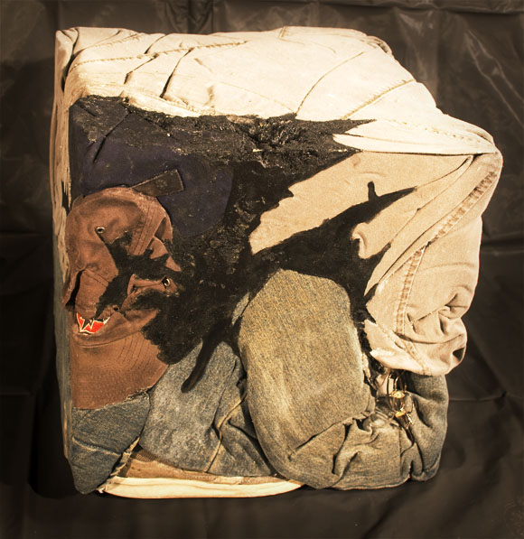

205 Cups, 125 pounds: Body Volume of the Artist
Fabric, Acrylic, Insulation Foam, Shoes, Glasses
1' 2.36" x 1' 2.36" x 1' 2.36"
This piece answers a simple question: What is the volume of the body?
Our usual configuration gives an impression of magnitude and grandeur. However, when reduced to the simplest shape to measure volume, a cube, we see that in reality we are all rather small.
